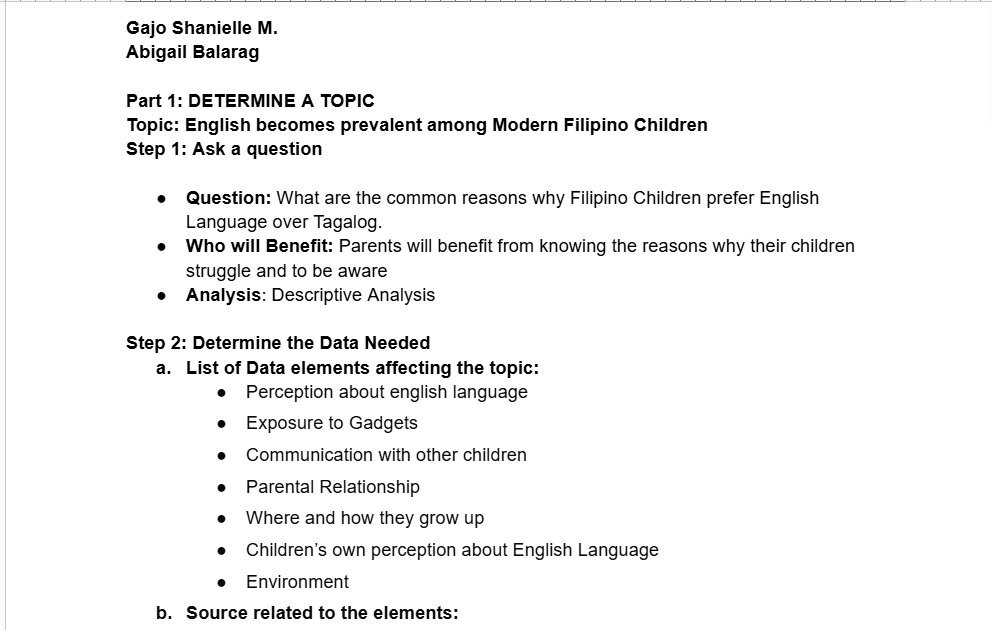

In this project, we identified and analyzed a topic about why modern Filipino children prefer using English over Tagalog. We started by forming a research question and determining who could benefit from the study, particularly parents and educators.
Through this activity, we learned how to define a research problem, gather relevant information, and prepare data elements needed for descriptive analysis.
Back to Projects Show Project